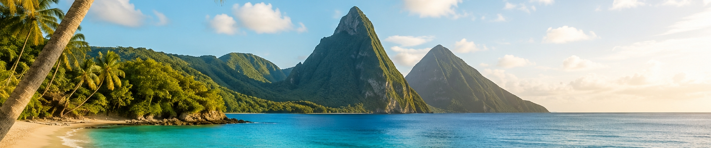
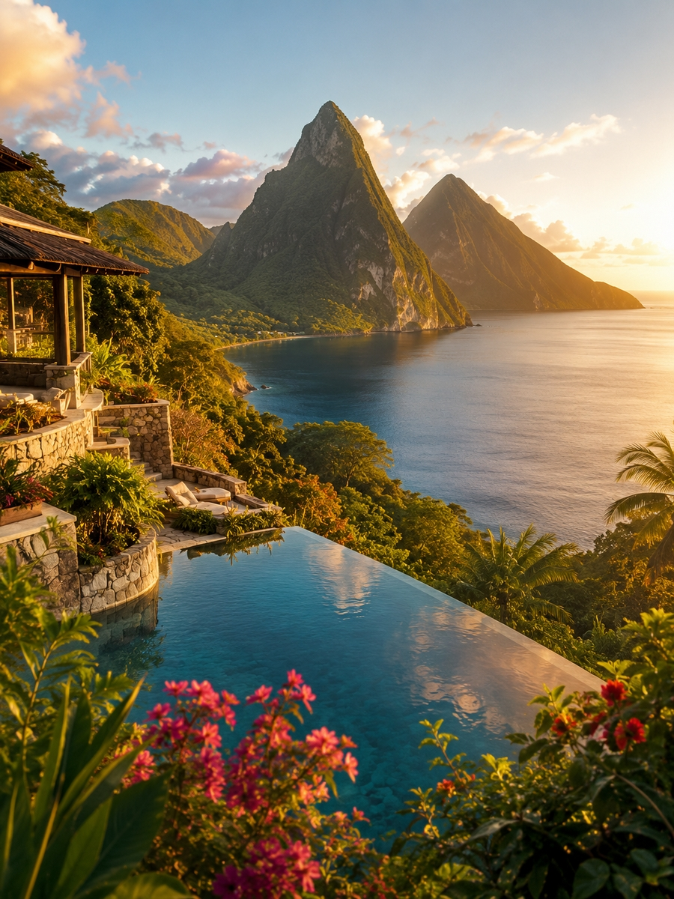
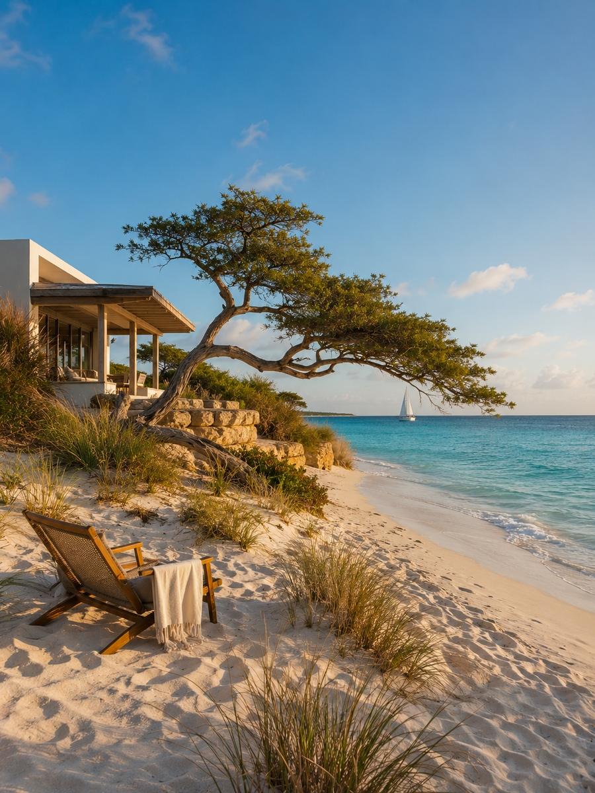
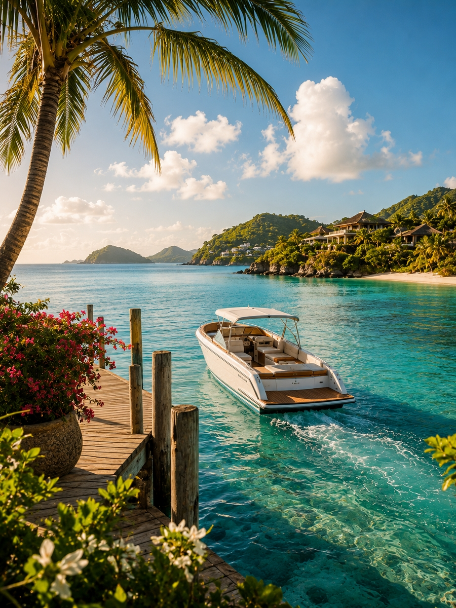

Выбор отеля раньше выбора подходящего острова
Ямайка, Аруба, Багамы и Доминикана дают совершенно разные цены, перелёты и ритм отдыха. Сначала выберите остров, затем отель.
→ Сравнить острова Карибов
Планируйте поездку на Карибы уверенно. Сравните Доминиканскую Республику, Jamaica, Aruba, Bahamas и другие потрясающие острова, а затем воспользуйтесь нашими гайдами по отелям, авиарейсам, eSIM, бюджету и перемещениям, чтобы спланировать каждый шаг.
От редакции: этот хаб ведет на основные материалы Travel Radar LK. Некоторые страницы содержат четко обозначенные партнерские ссылки.
Выберите главный риск поездки, а мы подскажем нужный гайд или следующий шаг для планирования.
Это не чат-бот, а быстрый маршрут: выберите проблему, и мы покажем, что читать и делать дальше.
Выберите сценарий слева, чтобы увидеть, что читать и делать в первую очередь.
Сначала выберите остров, затем отель
Bahamas, Jamaica, Доминиканская Республика и Saint Lucia могут казаться похожими в брошюрах, но они предлагают совершенно разные культуры, пейзажи и логистику. Решение о направлении должно предшествовать поиску отеля.
Следующий шаг: Сначала сравните острова на карте ниже, затем ищите варианты размещения.
Выбор отеля менее важен, чем правильный выбор острова. Каждое направление задает свой формат поездки.
Схематичная карта направлений, не точная география.
Нажмите на группу островов на карте, чтобы увидеть её сильные стороны и важные нюансы до бронирования.
Последовательность имеет значение. Сначала зафиксируйте направление и отель — затем выстраивайте остальные услуги вокруг этого решения.



Доминиканская Республика и Jamaica предлагают бесконечные all-inclusive курорты с прямым доступом к пляжу. Aruba и Curaçao впечатляют уникальными пустынными пейзажами и яркой голландской архитектурой. Saint Lucia и Antigua меняют удобство мега-курортов на живописные вулканические виды, камерные бутик-отели и несравненную романтику.
Сначала выберите атмосферу острова, затем ищите отели с фильтром по этой эстетике. Не принимайте решения отталкиваясь только от одной фотографии.

На небольших островах, таких как Barbados или Turks and Caicos, ваш курорт может находиться в 15 минутах езды от аэропорта. На крупных островах, таких как Puerto Rico или Jamaica, дорога до вашего побережья может занять более 90 минут. Долгий трансфер в день прибытия после трансатлантического рейса существенно меняет впечатления от поездки.
Бронируйте трансфер после подтверждения отеля — не раньше. Некоторые роскошные курорты включают трансфер на лодке или вертолете.

Региональная карибская eSIM означает, что карты, брони отелей и приложения для транспорта будут работать с первой минуты после приземления в Nassau, San Juan или Bridgetown. Никаких очередей за SIM-картами в аэропорту.
Региональные eSIM для Карибов часто охватывают сразу несколько островов, что идеально подходит для пассажиров круизов и путешественников между островами.

Частные клиники на карибских островах дороги, а тяжелые случаи часто требуют медицинской эвакуации на материковую часть США. Надежный полис с медицинским покрытием от $100 000 и эвакуацией — это спокойная база. Если вы планируете ходить под парусом, заниматься дайвингом или кайтсерфингом, убедитесь, что эти конкретные активности покрываются страховкой.
Храните номер полиса и телефон экстренной помощи офлайн — не только в электронной почте.
Купание со свиньями на Bahamas, исследование Питонов на Saint Lucia или дайвинг на рифе в Grand Cayman быстро распродаются в высокий сезон. Проверяйте расписание круизных лайнеров до бронирования: популярные места переполнены, когда в порту стоят несколько мега-лайнеров.
Выбирайте по размеру группы, точке отправления и эко-сертификатам — а не только по фотографии или цене.

Крупные хабы, такие как San Juan (SJU) и Punta Cana (PUJ), предлагают прямые рейсы со всего мира, тогда как до скрытых жемчужин, таких как Grenada или Saint Vincent, часто требуются региональные пересадки. Цены на рейсы сильно зависят от даты и острова — гибкость может сэкономить сотни долларов.
Долгие стыковки в Miami или Panama могут сделать дешевый билет намного дороже. Проверяйте общее время в пути, а не только тариф.
Каждый кластер закрывает конкретный этап планирования — начиная с уже опубликованных материалов по региону.
Эти шесть промахов в планировании объясняют большинство разочарований в островных курортах, переездах и круизах.
Ямайка, Аруба, Багамы и Доминикана дают совершенно разные цены, перелёты и ритм отдыха. Сначала выберите остров, затем отель.
→ Сравнить острова КарибовТарифы без питания часто скрывают крупные налоги, сборы, дорогое питание и полуторачасовые трансферы. Пять проверок защитят ваш бюджет.
→ Открыть чек-лист отеляМежду случайными парами островов почти нет прямых рейсов и паромов. Опирайтесь на рабочие паромные связки и короткие перелёты.
→ Спланировать маршруты между островамиС августа по октябрь северные острова рискуют попасть под штормы, тогда как Аруба, Бонайре и Кюрасао лежат в сухом поясе пассатов.
→ Изучить острова ABCМонтего-Бей, Негрил и Очо-Риос разделены часами пути по шоссе A1. Неверная база превращает экскурсии в шестичасовые переезды.
→ Сравнить регионы ЯмайкиСмена островных сетей и включённые данные в море быстро приносят счета по $12–$20 в день. Подготовьте региональную или круизную eSIM заранее.
→ Сравнить карибские eSIM